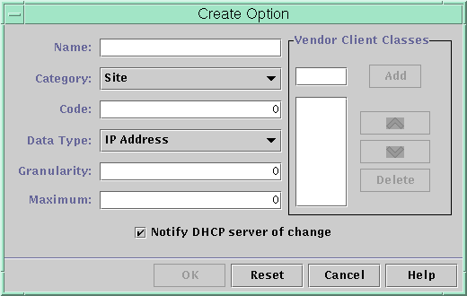
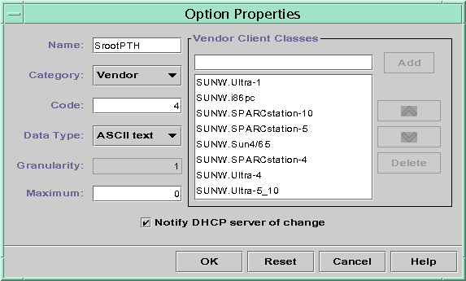

|
|||||||||||||||||||||||||||
|
1. Solaris TCPIP Protocol Suite (Overview) 2. Planning an IPv4 Addressing Scheme (Tasks 3. Planning an IPv6 Addressing Scheme (Overview) 4. Planning an IPv6 Network (Tasks) 5. Configuring TCP/IP Network Services and IPv4 Addressing (Tasks) 6. Administering Network Interfaces (Tasks) 7. Enabling IPv6 on a Network (Tasks) 8. Administering a TCP/IP Network (Tasks) 9. Troubleshooting Network Problems (Tasks) 10. TCP/IP and IPv4 in Depth (Reference) 12. About Solaris DHCP (Overview) 13. Planning for DHCP Service (Tasks) 14. Configuring the DHCP Service (Tasks) 15. Administering DHCP (Tasks) How to Start and Stop DHCP Manager Setting Up User Access to DHCP Commands How to Grant Users Access to DHCP Commands Starting and Stopping the DHCP Service How to Start and Stop the DHCP Service (DHCP Manager) How to Enable and Disable the DHCP Service (DHCP Manager) How to Enable and Disable the DHCP Service (dhcpconfig -S) DHCP Service and the Service Management Facility Modifying DHCP Service Options (Task Map) How to Generate Verbose DHCP Log Messages (DHCP Manager) How to Generate Verbose DHCP Log Messages (Command Line) How to Enable and Disable DHCP Transaction Logging (DHCP Manager) How to Enable and Disable DHCP Transaction Logging (Command Line) How to Log DHCP Transactions to a Separate syslog File How to Enable Dynamic DNS Updating for DHCP Clients How to Customize DHCP Performance Options (DHCP Manager) How to Customize DHCP Performance Options (Command Line) Adding, Modifying, and Removing DHCP Networks (Task Map) How to Specify Network Interfaces for DHCP Monitoring (DHCP Manager) How to Specify Network Interfaces for DHCP Monitoring (dhcpconfig) How to Add a DHCP Network (DHCP Manager) How to Add a DHCP Network (dhcpconfig) How to Modify the Configuration of a DHCP Network (DHCP Manager) How to Modify the Configuration of a DHCP Network (dhtadm) How to Remove a DHCP Network (DHCP Manager) How to Remove a DHCP Network (pntadm) Supporting BOOTP Clients With the DHCP Service (Task Map) How to Set Up Support of Any BOOTP Client (DHCP Manager) How to Set Up Support of Registered BOOTP Clients (DHCP Manager) Working With IP Addresses in the DHCP Service (Task Map) How to Add a Single IP Address (DHCP Manager) How to Duplicate an Existing IP Address (DHCP Manager) How to Add Multiple IP Addresses (DHCP Manager) How to Add IP Addresses (pntadm) How to Modify IP Address Properties (DHCP Manager) How to Modify IP Address Properties (pntadm) How to Mark IP Addresses as Unusable (DHCP Manager) How to Mark IP Addresses as Unusable (pntadm) How to Delete IP Addresses From DHCP Service (DHCP Manager) How to Delete IP Addresses From the DHCP Service (pntadm) How to Assign a Consistent IP Address to a DHCP Client (DHCP Manager) How to Assign a Consistent IP Address to a DHCP Client (pntadm) Working With DHCP Macros (Task Map) How to View Macros Defined on a DHCP Server (DHCP Manager) How to View Macros Defined on a DHCP Server (dhtadm) How to Change Values for Options in a DHCP Macro (DHCP Manager) How to Change Values for Options in a DHCP Macro (dhtadm) How to Add Options to a DHCP Macro (DHCP Manager) How to Add Options to a DHCP Macro (dhtadm) How to Delete Options From a DHCP Macro (DHCP Manager) How to Delete Options From a DHCP Macro (dhtadm) How to Create a DHCP Macro (DHCP Manager) How to Create a DHCP Macro (dhtadm) How to Delete a DHCP Macro (DHCP Manager) How to Delete a DHCP Macro (dhtadm) Working With DHCP Options (Task Map) How to Create DHCP Options (DHCP Manager) How to Create DHCP Options (dhtadm) How to Modify DHCP Option Properties (DHCP Manager) How to Modify DHCP Option Properties (dhtadm) Supporting Solaris Network Installation With the DHCP Service Supporting Remote Boot and Diskless Boot Clients (Task Map) Setting Up DHCP Clients to Receive Information Only (Task Map) Converting to a New DHCP Data Store How to Convert the DHCP Data Store (DHCP Manager) How to Convert the DHCP Data Store (dhcpconfig -C) Moving Configuration Data Between DHCP Servers (Task Map) How to Export Data From a DHCP Server (DHCP Manager) How to Export Data From a DHCP Server (dhcpconfig -X) How to Import Data on a DHCP Server (DHCP Manager) How to Import Data on a DHCP Server (dhcpconfig -I) How to Modify Imported DHCP Data (DHCP Manager) How to Modify Imported DHCP Data (pntadm, dhtadm) 16. Configuring and Administering DHCP Clients 17. Troubleshooting DHCP (Reference) 18. DHCP Commands and Files (Reference) 19. IP Security Architecture (Overview) 21. IP Security Architecture (Reference) 22. Internet Key Exchange (Overview) 24. Internet Key Exchange (Reference) 25. Solaris IP Filter (Overview) 28. Administering Mobile IP (Tasks) 29. Mobile IP Files and Commands (Reference) 30. Introducing IPMP (Overview) 31. Administering IPMP (Tasks) Part VI IP Quality of Service (IPQoS) 32. Introducing IPQoS (Overview) 33. Planning for an IPQoS-Enabled Network (Tasks) 34. Creating the IPQoS Configuration File (Tasks) 35. Starting and Maintaining IPQoS (Tasks) 36. Using Flow Accounting and Statistics Gathering (Tasks) |
Working With DHCP Options (Task Map)Options are keywords for network configuration parameters that the DHCP server can pass to clients. In the Solaris DHCP service, you cannot create, delete, or modify the standard DHCP options. The standard options are defined by the DHCP protocol, so the options cannot change. You can only perform tasks on options that you create for your site. For this reason, when you first set up your DHCP service, the Options tab in DHCP Manager is empty until you create options for your site. If you create options on the DHCP server, you must also add information about the options on the DHCP client. For the Solaris DHCP client, you must edit the /etc/dhcp/inittab file to add entries for the new options. See the dhcp_inittab(4) man page for more information about this file. If you have DHCP clients that are not Solaris clients, refer to the documentation for those clients for information about adding options or symbols. See About DHCP Options for more information about options in Solaris DHCP. You can use either DHCP Manager or the dhtadm command to create, modify, or delete options. Tip - Options are called symbols in the DHCP literature. The dhtadm command and its related man page also refer to options as symbols. The following task map lists tasks that you must perform to create, modify, and delete DHCP options. The task map contains links to procedures for the tasks.
Before you create DHCP options, you should be familiar with the option properties listed in the following table. Table 15-5 DHCP Option Properties
Creating DHCP OptionsIf you need to pass client information for which there is not already an existing option in the DHCP protocol, you can create an option. See the dhcp_inittab(4) man page for a list of all the options that are defined in Solaris DHCP before you create your own option. You can use the dhtadm -A -s command or DHCP Manager's Create Option dialog box to create new options. The following figure shows DHCP Manager's Create Option dialog box. Figure 15-17 Create Option Dialog Box in DHCP ManagerHow to Create DHCP Options (DHCP Manager)
How to Create DHCP Options (dhtadm)
The following command would create an option called NewOpt, which is a Site category option. The option's code is 130. The option's value can be set to a single 8-bit unsigned integer. # dhtadm -A -s NewOpt -d 'Site,130,UNUMBER8,1,1' -gThe following command would create an option called NewServ, which is a Vendor category option that applies to clients whose machine type is SUNW,Sun-Blade-100 or SUNW,Sun-Blade-1000. The option's code is 200. The option's value can be set to one IP address. # dhtadm -A -s NewServ -d 'Vendor=SUNW.Sun-Blade-100 \ SUNW.Sun-Blade-1000,200,IP,1,1' -gModifying DHCP OptionsIf you have created options for your DHCP service, you can change the properties for these options. You can use the dhtadm -M -s command or DHCP Manager's Option Properties dialog box to modify options. Note that you should modify the Solaris DHCP client's option information to reflect the same modification that you make to the DHCP service. See Modifying the Solaris DHCP Client's Option Information. The following figure shows DHCP Manager's Option Properties dialog box. Figure 15-18 Option Properties Dialog Box in DHCP ManagerHow to Modify DHCP Option Properties (DHCP Manager)
How to Modify DHCP Option Properties (dhtadm)
The following command would modify an option called NewOpt. The option is a Site category option. The option's code is 135. The option's value can be set to a single 8-bit unsigned integer. # dhtadm -M -s NewOpt -d 'Site,135,UNUMBER8,1,1'The following command would modify an option called NewServ, which is a Vendor category option. The option now applies to clients whose machine type is SUNW,Sun-Blade-100 or SUNW,i86pc. The option's code is 200. The option's value can be set to one IP address. # dhtadm -M -s NewServ -d 'Vendor=SUNW.Sun-Blade-100 \ SUNW.i86pc,200,IP,1,1' -gDeleting DHCP OptionsYou cannot delete standard DHCP options. However, if you have defined options for your DHCP service, you can delete these options by using DHCP Manager or the dhtadm command. How to Delete DHCP Options (DHCP Manager)
How to Delete DHCP Options (dhtadm)
Modifying the Solaris DHCP Client's Option InformationIf you add a new DHCP option to your DHCP server, you must add a complementary entry to each DHCP client's option information. If you have a DHCP client that is not a Solaris DHCP client, refer to that client's documentation for information about adding options or symbols. On a Solaris DHCP client, you must edit the /etc/dhcp/inittab file and add an entry for each option that you add to the DHCP server. If you later modify the option on the server, you must also modify the entry in the client's /etc/dhcp/inittab file. Refer to the dhcp_inittab(4) man page for detailed information about the syntax of the /etc/dhcp/inittab file. Note - If you added DHCP options to the dhcptags file in a previous Solaris release, you must add the options to the /etc/dhcp/inittab file. See DHCP Option Information for more information. |
||||||||||||||||||||||||||
|